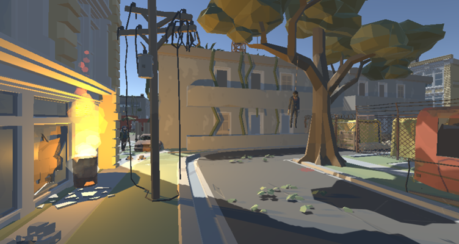
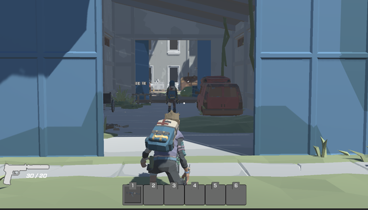
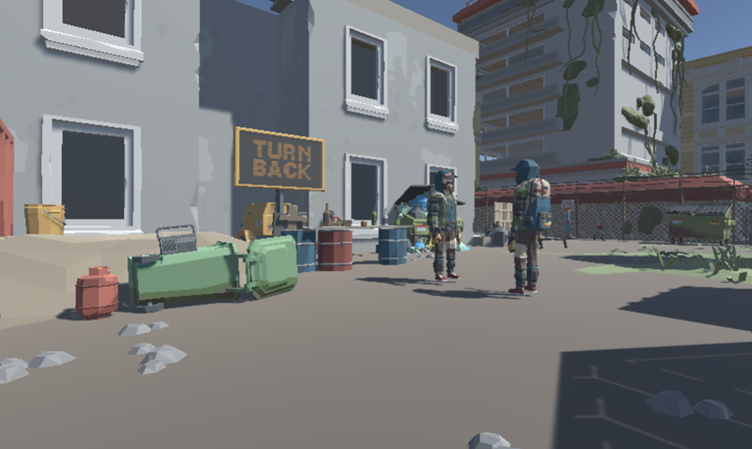
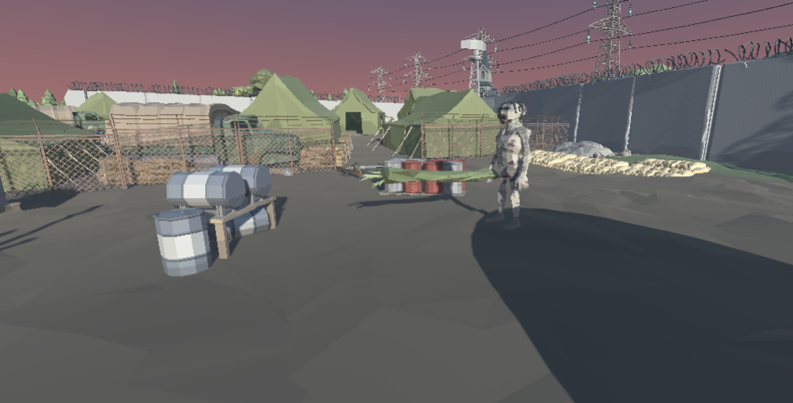

<link
  rel="stylesheet"
  href="https://use.fontawesome.com/releases/v5.8.2/css/all.css"
  integrity="sha384-oS3vJWv+0UjzBfQzYUhtDYW+Pj2yciDJxpsK1OYPAYjqT085Qq/1cq5FLXAZQ7Ay"
  crossorigin="anonymous"
/>

<link rel="preconnect" href="https://fonts.gstatic.com">
<link href="https://fonts.googleapis.com/css2?family=Roboto+Mono:wght@300&display=swap" rel="stylesheet">
<link href="https://fonts.googleapis.com/css2?family=Raleway:wght@600&display=swap" rel="stylesheet">
<link href="https://fonts.googleapis.com/css2?family=Roboto+Condensed:wght@300&display=swap" rel="stylesheet">
<link rel="stylesheet" href="info.css">

<head>
<meta name="viewport" content="width=device-width">
<title>Roach Collector</title>
</head>

<main>
  <nav id="navbar">
    <h2 id = "projectTitle">Roach Collector</h2>
    <a href="index.html">Back</a>
  </nav>

  <div style="min-height:10vh;"></div>

<p>Roach Collector is a Third Person Shooter with Rogue-Like elements built in Unity 2020 for a university module where I had to work in a team to develop a game over the course of a semester. Roach Collector is based in a post-apocalyptic world where you have to go from location to location taking down the leader of that camp, each level had a focus on openness that allowed the player to take multiple paths through each level where each path would have different; loot, enemies and challenges. </p>
<p>Built in Unity 2020.1.14f1</p>
<p>Built in 6 months. January 2021 - June 2021</p>
  <button><a href="https://github.com/AdamHarris-GamesProgrammer/TGPA2" target="_blank">GitHub Repository</a></button>
  <button><a href="https://adamharris12384.itch.io/roach-collector" target="_blank">Download (itch.io)</a></button>
  <div id = "body">
    <h2>Features</h2>
    <div class="features">
      <div>
        <li>Inventory system. The player can pick up various items throughout levels such as ammo, guns, armour, and general valuable items that could be sold.</li>
        <li>“Stash”: This is where the player could stash various items at their hideout where they wouldn’t lose it if they died. </li>
        <div class="videoFrame"></div>
      </div>
      <div>
        <li>Stealth elements: Take down enemies how you want to. Whether that be through silent takedowns or through shooting your way through.</li>
        <div class="videoFrame"></div>
      </div>
      <div>
        <li>Save System: Roach Collector features a save system based on the .NET serialization system, this means that each saveable object in a level will added to the players save file and there status could be saved and loaded depending on what they were, for example the black market would save what guns and armour were already bought, the inventory system was also baked into the saving system to allow the player to come in and out of each level with their loot.</li>
        <div class="videoFrame"></div>
      </div>
      <div>
        <li>Utility Theory-based Finite State Machine (FSM): Each enemy AI in the game would act based on a FSM, this allows them to switch between states in a managed way, however for the combat systems where there are many actions that would be worthwhile such as; taking cover, shooting at the player, calling for backup, or retreating. A Utility theory system was produced where each action would be evaluated as to how useful it is and then the AI would take that action. </li>
        <div class="videoFrame"></div>
      </div>
    </div>
    <div>
      <h2>Video</h2>
      <div class="videoFrame">
        <iframe width="100%" height="100%" src="https://www.youtube.com/embed/X47HNO_lmp8" title="YouTube video player" frameborder="0" allow="accelerometer; autoplay; clipboard-write; encrypted-media; gyroscope; picture-in-picture" allowfullscreen></iframe>
      </div>
    </div>
    <div>
      <h2>Challenges</h2>
      <p>Teamwork and communication: In the early days of developing Roach Collector my team and I suffered various communication errors and were developing features for the game that just weren’t needed or we all had different ideas of what the game was going to be. It wasn’t until April (around 3 months into development) that we actually sat down and figured out what we wanted to develop. </p>
      <p>GitHub issues: This was the first team-based project I had used GitHub for and this came with some confusion primarily with how we can all work together without stepping on each other toes, this was eventually solved when we figured out the branching system. </p>
      <p>Clarity and Ease of Use: For Roach Collector I developed various systems such as the Save system, inventory and the Combat AI. However none of these system had documentation written for them at first as they originally just made for my own independent projects. This caused some of my team to be confused about how they work and how to use them, this was solved when I wrote documentation for them that included guided tutorials on how each system worked. </p>
    </div>
  </div>

  <footer id="footer">
    <h3 id="footer-text">Adam Harris &copy;2021</h3>
  </footer>
</main>
